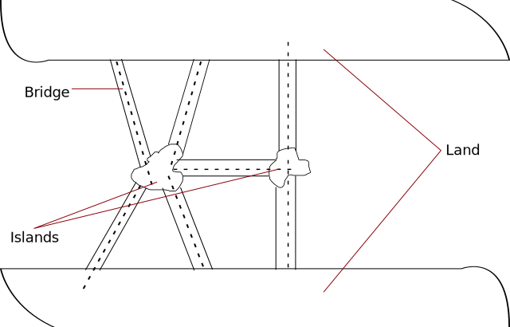
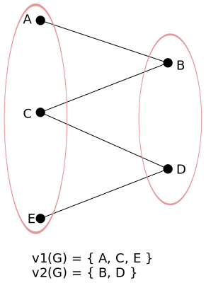

Graph theory
Konigsberg Seven Bridge Problem:
- Video lecture ⇗
- Graph theory was originated by this problem.
- Konigsberg was a city in Russia, and this problem happen in Pregel river.
- The problem involves determining whether it is possible to walk through the city, crossing each of
the seven bridges exactly once and returning to the starting point.

- If we start from any regional part, & we have to cover one bridge only once so that every bridge
should be crossed as well as all regional part should also be covered.
- Euler was the mathematician that worked on it.
- If every region will have even number of bridges then only bridges can be crossed once.
- Degree of a vertex = number of edges connected to a vertex.
- deg (1) = 3, deg (2) = 3, deg (3) = 5, deg (4) = 3
- As every vertex have odd degree that's why we can't cross all bridges at once.
- Main conclusion: In order to return to the starting vertex after visiting every vertex, it is
necessary for every vertex to have an even degree.
Therefore, it is not feasible to traverse each bridge exactly once while covering all bridges
and regions.
Graph
- A graph G = (V, E) consists of two sets:
- A non-empty set V = {v1, v2, v3, ...} whose elements are called vertices, nodes or points of
G.
- A set E = {e1, e2, e3, ...} whose elements are called edges of G such that each edge e
∈ E associated with ordered or unordered pair of elements of V.
Finite graph and Infinite graph
- A graph G(V, E) is said to be finite if it has a finite number of vertices and finite number of
edges, otherwise it is a infinite graph.
- If G is finite, |V(G)| denotes the number of vertices in G and is called the order of G.
- If G is finite, |E(G)| denotes the number of edges in G and is called the size of G.
Adjacent node (vertices)
- Two vertices are said to be adjacent if they are connected by an edge in a graph.
- Or any pair of nodes that is connected by an edge in a graph is called adjacent nodes.
Isolated nodes
- In a graph a node that is not adjacent to another node is called an isolated node.
Incident
- Let G(V, E) be a graph and edge ek ∈ E which joins the vertices vi and
vj, then the edge ek is said to be incident to the vertices vi and
vj
Simple graph
- A graph which has neither loops nor multiple edges is called a simple graph.
- Or a simple graph is one for which there is no more then one edge between a pair of vertices.
Loop
- A loop is the edge in a graph which join a vertx to itself (whose end points are same).
Parallel edges
- Two vertices may be connected with more than one edge, such edges are called parallel edges.
Multigraph
- Any graph which contains some parallel edges is called a multigraph.
Pseudo graph
- A graph in which loops and multiple edges are allowed is called a pseudo graph.
Directed graph and Undirected graph
- A directed graph (or digraph) G consists of a set V of vertices and a set E of edges such that e
∈ E is associated with an ordered pair of vertices.
Undirected graph
- An undirected graph G consists of set V of vertices and a set E of edges such that each edge e
∈ E is associated with an unordered pair of vertices.
Degree of vertex
- The degree of a vertex of an undirected graph is the number of edges incident with it, except that a
loop at a vertex contributes twice to the degree of that vertex.
- The degree of the vertex 'v' in a graph G is denoted by degG(v).
In degree and out degree
- In a directed graph G, the out degree of a vertex 'v', denoted by outdegG(v) is the
number of edges beginning at 'v'.
- The in-degree of 'v', denoted by indegG(v) is the
number of edges ending at v.
- The sum of the in degree and out degree of a vertex is called the total degree of the vertex.
Types of graph
Null Graph
- A graph which contains only isolated vertices is called a null graph.
- The set of edges in a null graph is empty.
- Null graph on 'n' vertices denoted by Nn.
Connected graph
- If there exist at least one path between any two vertices of a graph G(V, E), then it is called
a connected graph.
- If graph is not connect then it is called a disconnected graph.
Complete graph
- A graph G(V, E) is said to be complete graph if every vertex in G is connected to all other
vertices of G.
- A complete graph is usually denoted by Kn.
Regular graph
- A graph in which all vertices are of equal degree is called a regular graph.
- If the degree of each vertex is 'r' then the graph is called a regular graph of degree 'r'.
Cycle graph
- A connected graph whose edges form a cycle of length 'n' is called a cycle graph of order n.
- Cycle graphs of length 'n' is denoted by Cn.
- For a cycle graph n >= 3;
Wheel graph
- The wheel graph is denoted by Wn (n > 3) is obtained from Cn by adding a
vertex 'v' inside Cn and connecting it to every vertex in Cn.
Wn is a regular graph for n = 3. It has n + 1 vertices & 2n edges.
Path graph
- If we remove an edge from a Cn graph then such graph is called a path graph of order
'n'. It is denoted by Pn.
Adjacency Matrix
Representation of undirected graph using adjacency matrix
- Since adjacency matrix representation is based on ordering of vertices in a graph, therefore,
for a graph with n vertices, we may construct as many as n! different adjacency matrices.
Some important result about the adjacency matrix
- The adjacency matrix A is symmetric i.e., aij = aji ∀ i & j.
- The number of non-zero elements in the matric is equal to the sum of degree of all vertices of
the graph.
- The adjacency matrix has n2 elements.
- The entries along the principal diagonal of A are all 0's if and only if the graph has no self
loops.
Adjacency matrix (for a directed graph)
Use adjacency matrix to represent the graph.
Incidence Matrix
Representation of undirected graph
Representation of directed graph
Spanning subgrap
- Let G = (V, E) be a graphh and H = (V', E') be a subgraph of G. Subgraph 'H' of G is called a
spanning subgraph of G if and only if V(H) = V(G).
i.e. H contains all the vertices of G.
Isomorphic Graphs
- Two graphs G1 = (V1, E1) and G2 = (V2, E2) are said to be isomorphic if there exist a function f: V1
→ V2 such that
- f is one-one onto or bijective
- {a, b} is an edge in E1, iff {f(a), f(b)} is an edge in E2 for any two elements a, b ∈
V1.
Bi-partite graph
- A graph G(V, E) is called Bi-partite if its vertex set V(G) can be partitioned into two non-empty
disjoint subsets v1(G) and v2(G) in a such a way that each edge e ∈ E(G) has its one end point
in v1(G) and other end point in v2(G), the partition V = v1 ⋃ v2 called bi-partition of G.

Handshaking theorem
- The sum of the degrees of all vertices of a graph G is twice the number of edges in G.
Proof → Consider a graph G(V, E) with m edges and n vertices i.e.,
V = {v1, v2, v3, ..., vn}
E = {e1, e2, e3, ..., em}
Since degree of vertex is defined as the number of edge connected with it. And every edge is
connected with exactly two vertices so each edge is counted twice at each of its end. This implies that
the sum of the degrees of all vertices in G is twice the number of edges in G.
Theorem → The number of vertices of odd degree in a graph G is always even.
Sub graphs
- Consider a graph G = (V, E). A graph g = (v, e) is said to be a subgraph of G if e ⊂ E & v
⊂ V (e is a subset of E and v is a subset of V) such that edges in 'e' are incident only with
the vertices in V.
Note ↓
- A graph G is a subgraph of itself. A null graph is also a subgraph of G.
- A subgraph of a subgraph of G is a subgraph of G.
- A single vertex in a graph G is a subgraph of G.
Q- Find the different subgraphs of this graph.
Operations of graphs
Union of graphs
- Let G1(V, E) and G2(V, E) are two graphs then their union will be a graph such that
V(G1
⋃ G2) = V(G1) ⋃ V(G2)
E(G1 ⋃ G2) = E(G1) ⋃ E(G2)
Intersection of graph
- Let G1(V, E) & G2(V, E) are two graphs with at least one vertex in common then their
intersection will be a graph such that
V(G1 ⋂ G2) = V(G1) ⋂ V(G2)
E(G1 ⋂ G2) = E(G1) ⋂ E(G2)
Sum of two graphs
- Let G1(V,E) & G2(V, E) are two graphs such that V(G1) ⋂ V(G2) = ∅
then the sum G1 + G2 is defined as the graph whose vertex set is V(G1) + V(G2) and the edge
set is consisting those edges, which are in G1 and in G2 and the edges obtained, by joining each
vertex of G1 to each vertex G2.
Ring sum of graphs
- Let G1(V, E) and G2(V, E) be two graphs then the ring sum of G1 and G2 denoted by G1 ⨁
G2, is defined as the graph G such that
(i) V(G) = V(G1) ⋂ V(G2)
(ii) E(G) = E(G1) U E(G2) - E(G1) ⋂ E(G2)
Complement of a graph
- The complement G' of simple graph G(V, E) is the simple graph with vertex set V(G) such that
edge vi vj ∈ E(G) iff vi vj ∉ E(G')